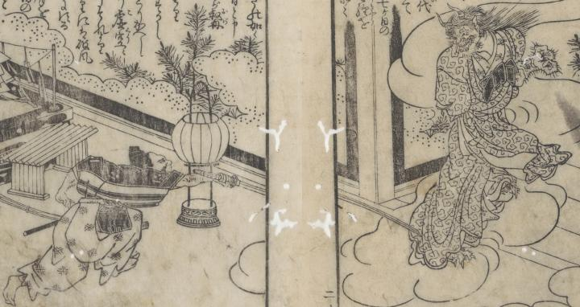

← 图鉴索引

屋敷の中で雲に乗り、斬られた自分の腕を持つ鬼。
著作者：岡田玉山／出典：親書誌：U426_nichibunken_0432：繪本頼光一代記／日付：2016／資源識別子：U426_nichibunken_0432_0006_0000
Copyright (c)2010- International Research Center for Japanese Studies, Kyoto, Japan. All rights reserved.